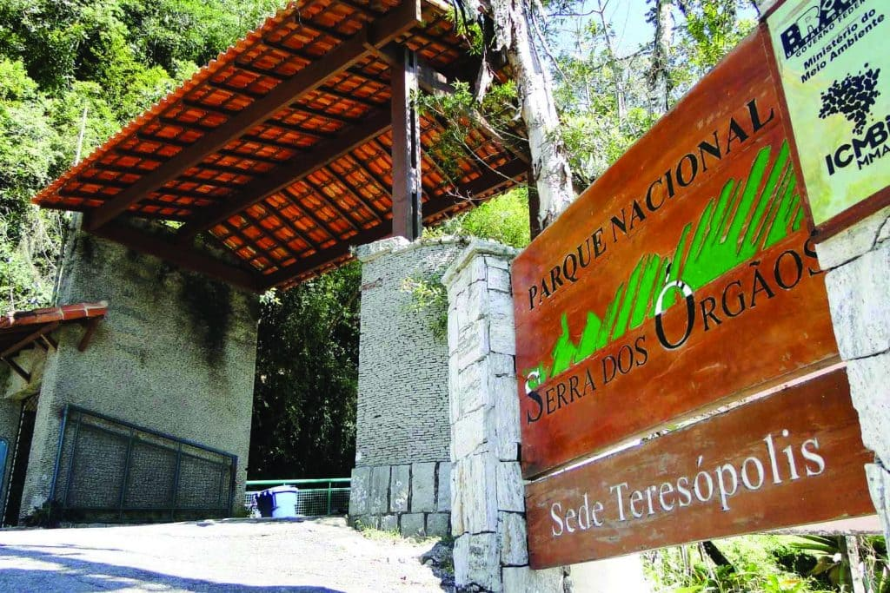
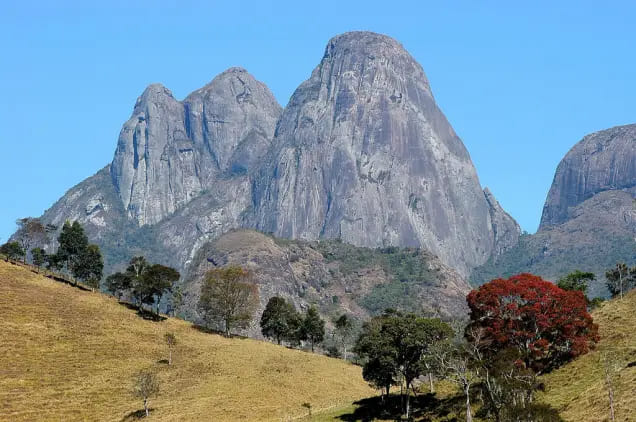
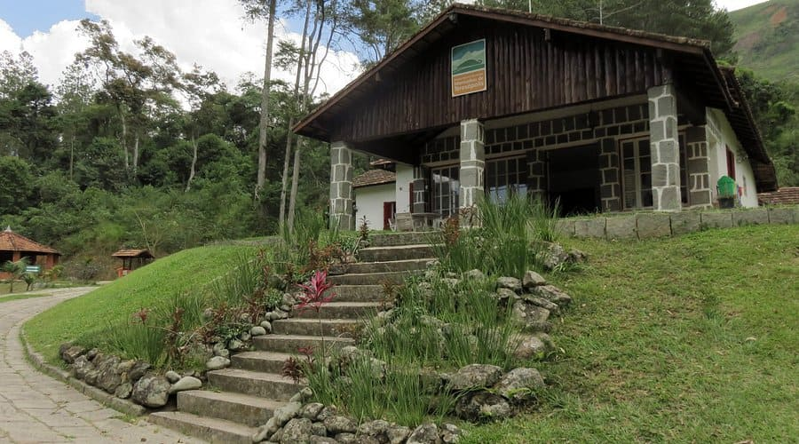

Nossos Parques Naturais
Conheça a história e a biodiversidade das áreas de proteção ambiental de Teresópolis.

Parque Nacional da Serra dos Órgãos (PARNASO)
Federal (ICMBio)História e Criação
Criado em 30 de novembro de 1939, o PARNASO é o terceiro parque nacional mais antigo do Brasil. Ele nasceu com o objetivo principal de proteger as águas e as florestas da região da Serra dos Órgãos, além de preservar cartões-postais icônicos como o Dedo de Deus.
O que você vai encontrar
A sede de Teresópolis é a mais estruturada do parque. Aqui começa a famosa Travessia Petrópolis-Teresópolis, além de oferecer diversas trilhas de nível leve (como a trilha suspensa) a pesado (como a Pedra do Sino), cachoeiras cristalinas e uma rica biodiversidade de Mata Atlântica.

Parque Estadual dos Três Picos
Estadual (INEA)História e Criação
Criado em 2002, é o maior parque estadual do Rio de Janeiro, abrangendo não só Teresópolis, mas também municípios vizinhos. Ele foi criado para preservar o coração da Serra do Mar e proteger nascentes importantíssimas para a região.
O que você vai encontrar
Um verdadeiro paraíso para montanhistas experientes. O parque abriga o Pico Maior (o ponto mais alto de toda a Serra do Mar), formações rochosas imponentes como a Mulher de Pedra e áreas de Mata Atlântica incrivelmente preservadas e selvagens.

Parque Natural Municipal Montanhas de Teresópolis
Municipal (Prefeitura)História e Criação
Criado em 6 de julho de 2009, este parque é um marco na proteção ambiental gerida pelo próprio município. Ele foi estabelecido para preservar importantes fragmentos de Mata Atlântica e os ecossistemas ao redor de Teresópolis, protegendo a fauna e a flora locais.
O que você vai encontrar
O parque é dividido em dois núcleos principais: a Sede Santa Rita (focada em lazer, contemplação e educação ambiental, ideal para famílias) e a famosa Pedra da Tartaruga (o paraíso do rapel e com uma área de camping incrível com vista panorâmica da serra).
Quer viver essa experiência de perto?
Nossos parques estão cheios de atividades, trilhas guiadas e mutirões. Confira a agenda e participe dos próximos eventos organizados pela nossa equipe!
Ver Agenda de Eventos